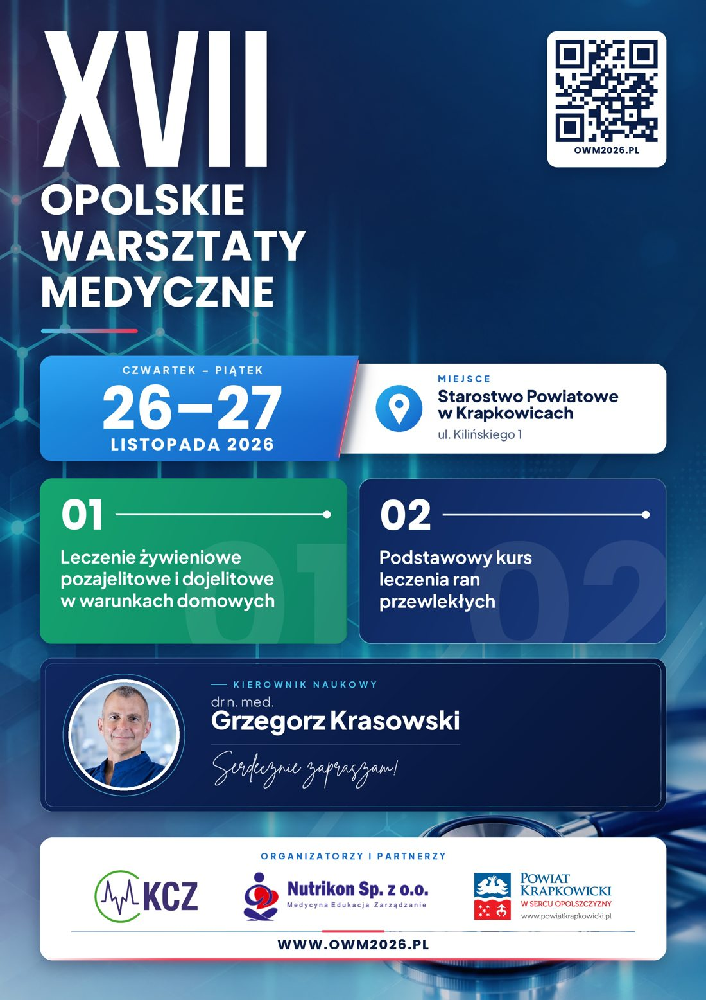

Kwalifikacja, dostępy żywieniowe, wyliczanie mieszanin, powikłania, dokumentacja i kontrola NFZ. Zajęcia praktyczne na fantomach, w pracowni endoskopowej i na bloku operacyjnym.
02Oczyszczanie ran, kompresjoterapia, dobór opatrunków, terapia podciśnieniowa, zespół stopy cukrzycowej. Zajęcia praktyczne na Oddziale Chirurgii Ogólnej.
dr n. med.
Serdecznie zapraszam!
ul. Kilińskiego 1, 47-303 Krapkowice
Wykłady odbywają się w Sali Konferencyjnej i Sali Konferencyjnej 2 Starostwa. Część zajęć praktycznych prowadzona jest w szpitalu: w Gabinecie Pielęgniarki Naczelnej, na Oddziale Chirurgii Ogólnej, w Pracowni endoskopowej i na Bloku operacyjnym.
Otwórz w Mapach GoogleZgłoszenia na oba kursy przyjmuje organizator, Nutrikon Sp. z o.o., przez formularz na swojej stronie.
W formularzu wybierasz kurs i podajesz:
Formularz otworzy się w nowej karcie na stronie nutrikon.pl. Pytania: nutrikon@nutrikon.pl